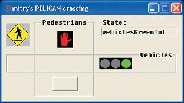

class Pelican::pedestriansFlash +(this=0x411bb9)-> vehiclesEnabled::on_enter->vehiclesGreen::on_enter class Pelican::vehiclesGreenInt derives from class Pelican::vehiclesGreen ? -NO->vehiclesGreen::on_exit class Pelican::vehiclesGreenInt derives from class Pelican::vehiclesEnabled ? -YES-stay in vehiclesEnabled class Pelican::vehiclesGreen derives from class Pelican::vehiclesGreenInt ?-NO class Pelican::vehiclesGreen derives from class Pelican::vehiclesEnabled ? -YES-already in vehiclesEnabled->vehiclesGreenInt::on_enter class Pelican::vehiclesYellow derives from class Pelican::vehiclesEnabled ? -YES-stay in vehiclesEnabled class Pelican::vehiclesGreenInt derives from class Pelican::vehiclesYellow ?-NO class Pelican::vehiclesGreenInt derives from class Pelican::vehiclesEnabled ? -YES-already in vehiclesEnabled->vehiclesYellow::on_enter class Pelican::pedestriansWalk derives from class Pelican::vehiclesYellow ? -NO->vehiclesYellow::on_exit class Pelican::pedestriansWalk derives from class Pelican::vehiclesEnabled ? -NO->vehiclesEnabled::on_exit class Pelican::vehiclesYellow derives from class Pelican::pedestriansWalk ?-NO class Pelican::vehiclesYellow derives from class Pelican::pedestriansEnabled ? -NO->pedestriansEnabled::on_enter->pedestriansWalk::on_enter class Pelican::pedestriansFlash derives from class Pelican::pedestriansWalk ? -NO->pedestriansWalk::on_exit class Pelican::pedestriansWalk derives from class Pelican::pedestriansFlash ?-NO class Pelican::pedestriansWalk derives from class Pelican::pedestriansEnabled ? -YES-already in pedestriansEnabled->pedestriansFlash::on_enter class Pelican::vehiclesGreen derives from class Pelican::pedestriansFlash ? -NO->pedestriansFlash::on_exit class Pelican::pedestriansFlash derives from class Pelican::vehiclesGreen ?-NO class Pelican::pedestriansFlash derives from class Pelican::vehiclesEnabled ? -NO->vehiclesEnabled::on_enter-